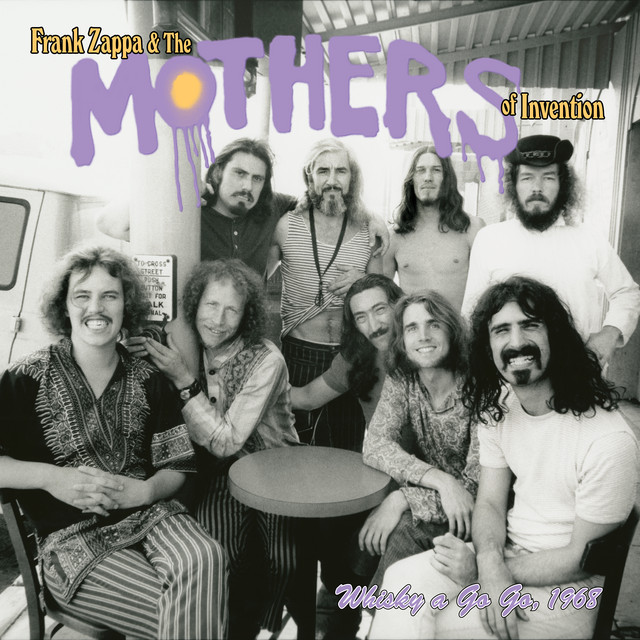

Frank Zappa and the Mothers of Invention - Live at the Whiskey A Go Go - eleased: June 21, 2024 Length 176:02 Minutes.
TTrackjTracklist:
Whisky Improvisation: Episode I
America Drinks & Goes Home
Help, I'm A Rock/Transylvania Boogie
My Boyfriend's Back
Bust His Head
Tiny Sick Tears Jam
“The Purpose Of This Evening…
Whisky Improvisation: Episode II
Status Back Baby
Memories Of El Mon
Oh, In The Sky
Valerie
“Fun & Merriment”
Hungry Freaks, Daddy
King Kong - Pt. 1
King Kong - Pt. 2
Octandre
Whisky Improvisation: III
God Bless America
Presentation Of Wings
Plastic People
Della’s Preamble
The Duke - Take 1
The Duke - Take 2
Khaki Sack
The Whip
Whisky Chouflée
Brown Shoes Don’t Make It
Brown Shoes Shuffle
The Whip (FZ Mix)
Blah blah blah I like this album.